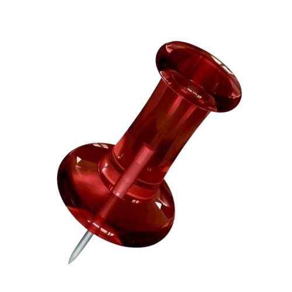

personally probably like #1 on my list, kind of obsessed, would 100% recommend
This was a tight decision between House and Dexter both incredible shows but something about a medical drama that isn't corny just makes it incredible not to mention the crazy plot lines and cgi
bit of a classic, great story not too gory, not too scary either imo an odd amount of sexual scenes for a show about a serial killer but other than that great plot lines
one of the greatest sitcoms I've ever seen and i'm like that skit where andy samberg goes over how He's watched like every show ever so I've seen a lot of sitcoms and abbot is the best
Incredibly under rated sci-fi comedy show by seth macfarlane not enough people talk about it but its incredibly funny and I personally love sci-fi but im not really into star wars or star trek so the orville is great because it isnt boring